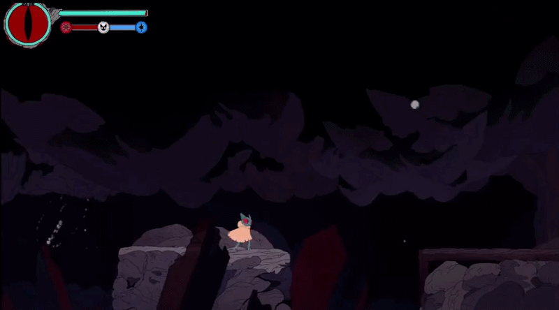

A 2D metroidvania with combo-based combat, a morality system that unlocks divergent powers, and ability-gated exploration. As Technical Designer on an 8-person team, I built the combat system and full movement suite from scratch in GDScript. Steam demo available.
01 - Combat System
The combat system runs on a finite state machine where each attack is a distinct state node chained into combo sequences. Hitbox activation uses per-state timers rather than animation signals, so attack windows can be tuned independently from animation timing.
Input buffering captures player inputs during any attack state. The transition to the next hit only fires when the combo timer drops below a threshold while the buffer flag is set. Combos feel responsive without allowing instant cancels.
The second hit introduces directional branching: neutral input leads to the standard finisher, up-input triggers a launcher that sends enemies airborne for air-combo follow-ups, and horizontal input triggers a forward lunge. The player gets meaningful mid-combo choices without complex input parsing.
Berserk mode activates a parallel combo chain with its own state sequence and a heavy finisher, paired with a full character transformation that swaps the moveset entirely.
02 - Movement & Traversal

Built the complete movement suite for a metroidvania that gates exploration behind ability unlocks: run, jump, dash, wall jump, double jump, and ground pound, each from scratch in GDScript.
Each ability is a modular addition to the player controller, designed to slot in cleanly as the player progresses and new areas open up.